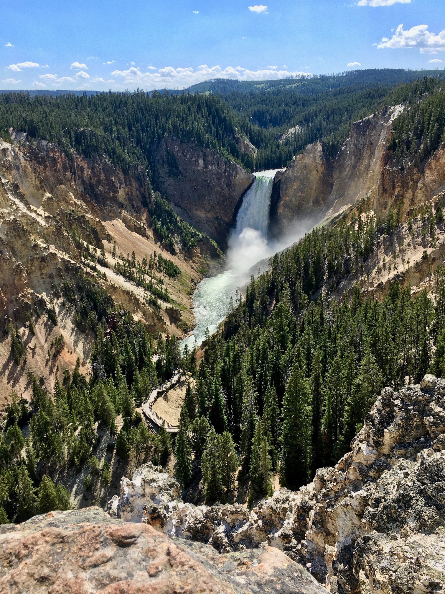
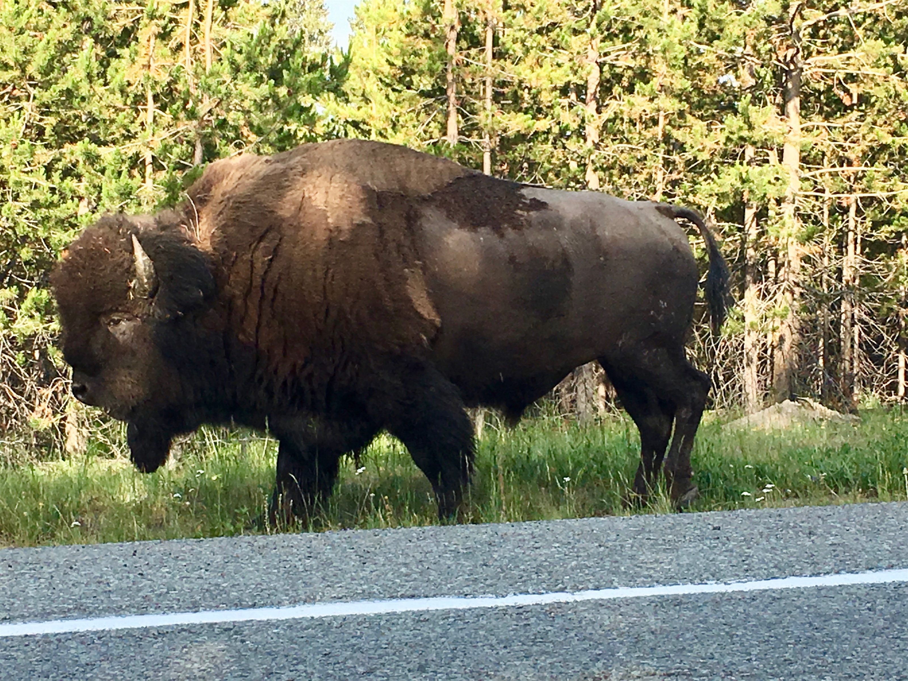
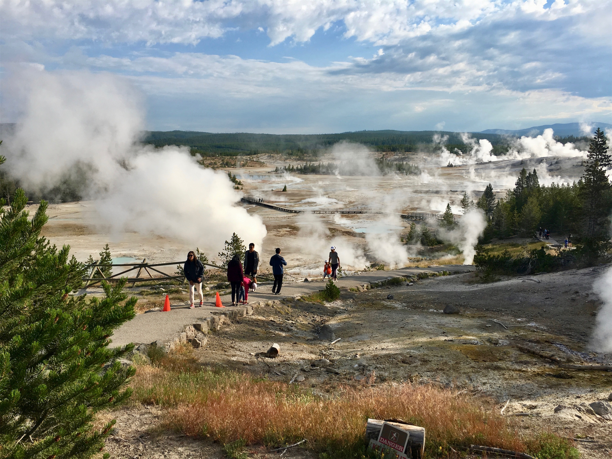
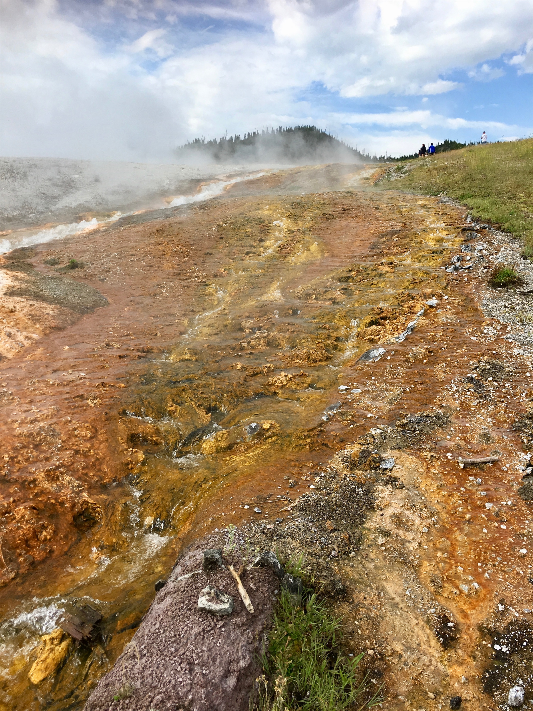
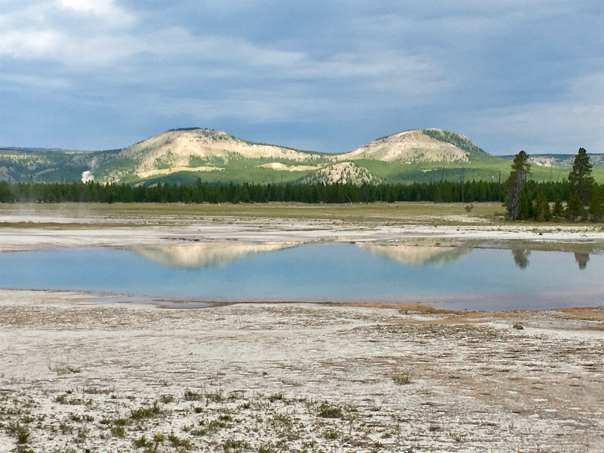
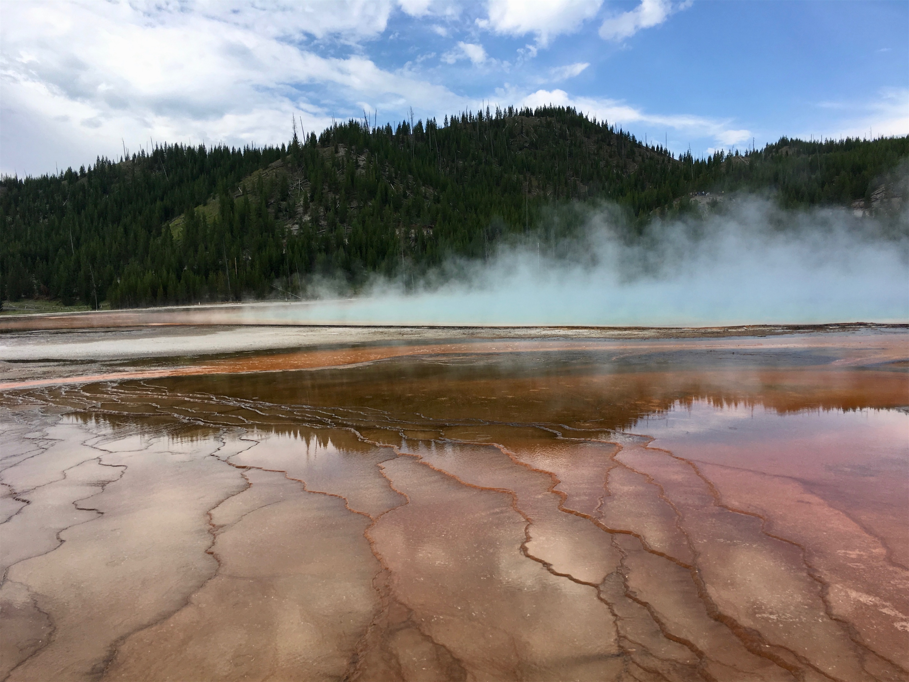
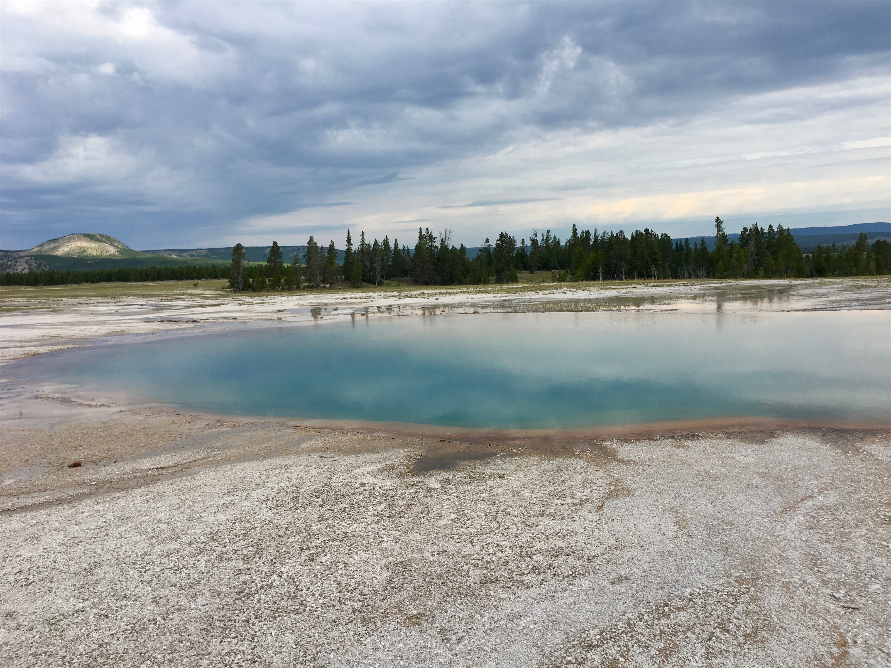
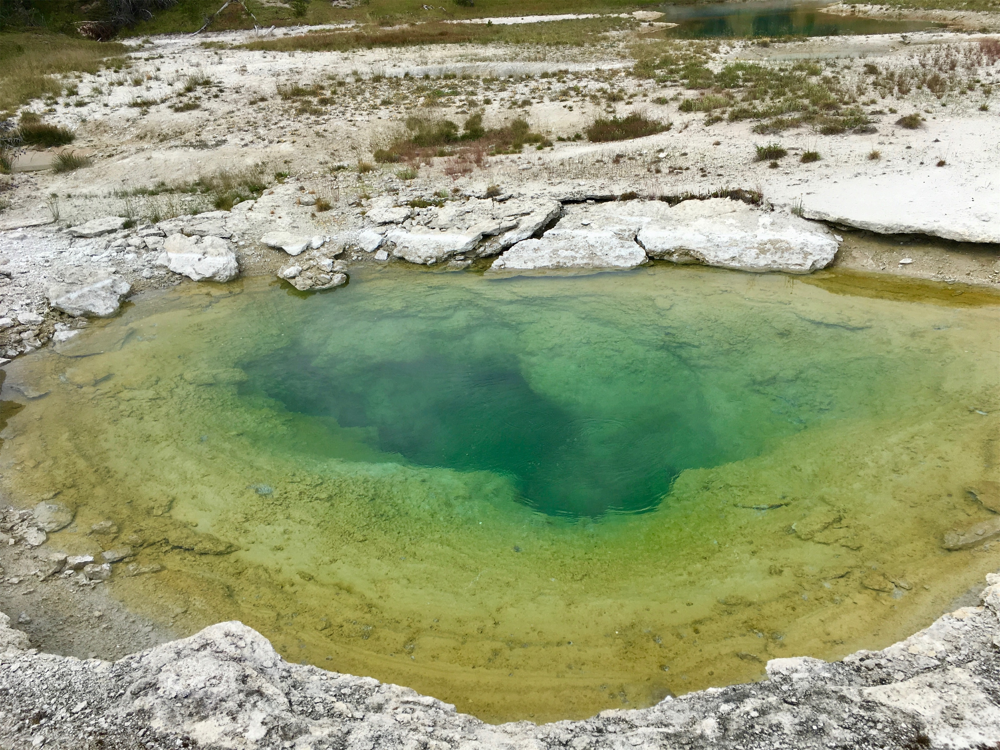
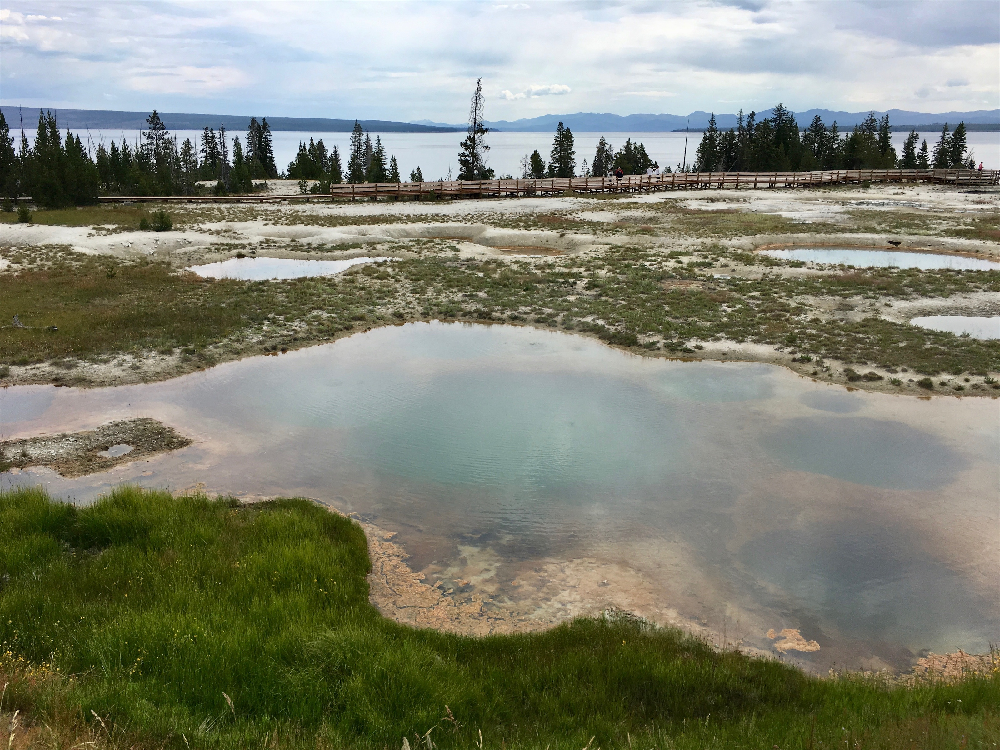
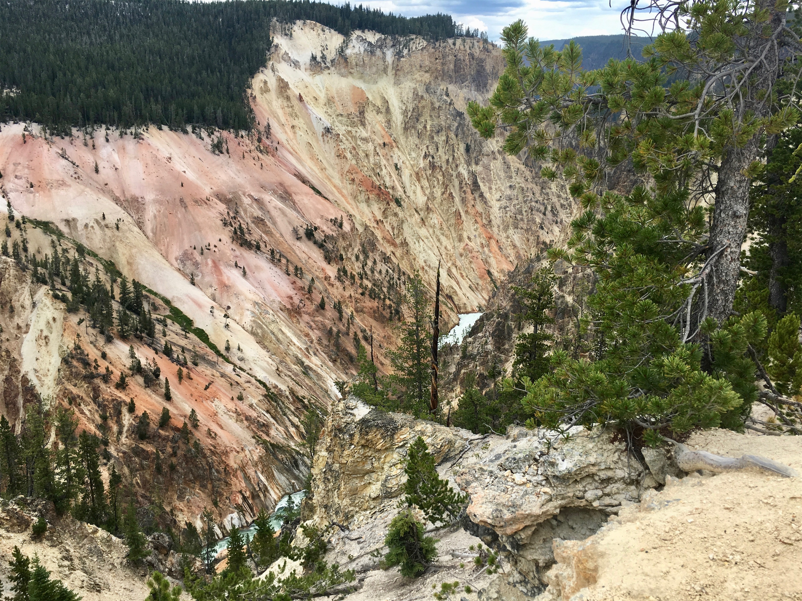

Sunday, Jul 15, 2018, 1:46 PM MDT
Yellowstone National Park, Cody, WY, United States
79°F Sunny
79°F Sunny
![]()
7/14 Glacier Guides Lodge, West Glacier, MT -> Helena, MT 250 mi, 5.75 hr
7/15 Helena, MT -> Canyon Lodge, WY 227 mi, 5 hr
7/16 Canyon Lodge, WY -> South Loop (RT) 106 mi, 6.75 hr
Trip Total: 8,074 mi
In the mountains, we don’t always get roads that lead straight to our destination. Leaving West Glacier, we had to first go to East Glacier, crossing the northern Rocky Mountains in 48 degree drizzle, before we could head south to our overnight stop in the nice town of Helena, where we got an oil change. The next morning, we continued south on a mixture of 80 MPH interstates and highways through the Helena Valley, eventually entering Yellowstone through the north entrance, framed by the famous stone Roosevelt Gate. This is a massive park, organized along a figure-eight road. It also lies in three states, 96% Wyoming, 3% Montana, and 1% Idaho. Our destination was the Canyon Lodge, on the right-middle of the eight, and a ranger suggested taking the upper-eastern leg because of construction delays on the upper-western leg. We made a slight detour to head into the Lamar Valley, were we caught a glimpse, in the distance, a few of the largest herd of bison on public lands. We then headed to the North Rim of the canyon to see the Lower Falls of the Yellowstone River, and got our first taste of congestion. Fortunately, a parking spot miraculously appeared.
We were last in Yellowstone (the world’s first National Park) with the boys in 2000, but much of the park looked unfamiliar. Last time, we stayed in the yellow Lake Hotel, the oldest one in the park. This time, we stayed in the Canyon Village, which has been TOTALLY redone with new lodge buildings, restaurants, stores, gift shops, bookstores, and the best visitor center we have seen on the trip. The next morning we headed out early to try and beat the crowds and the afternoon rain to drive the complete southern loop of the figure eight. Along the way, we were stunned to see a bison walking right along the road across from our car! We also saw several elk along the way, along with the requisite mass of people pulled over taking pictures. Starting at the Norris Geyser Basin, which gave us our first look at the incredible geothermal features in the park. We walked through an area full of steam and bubbling (along with the rotten egg smell of hydrogen sulfide) on the mandatory boardwalks so we didn’t meet our death breaking through the thin crust into boiling acidic water. We then headed to see the spectacular Grand Prismatic Springs, with different colored water caused by bacteria mats, and more boardwalks. The next stop was the West Thumb Geyser Basin, home to more steaming and bubbling and a view of the large Yellowstone Lake (the largest lake in North America above 7,000 ft). After a final whiff of sulphur in the vigorously boiling Sulphur Caldron, we finished the drive at the Southern Rim of the canyon to see Artist Point, with stunning canyon wall colors and another view of the Lower Falls. We capped off the drive at the Canyon Visitor Education Center near our lodge, and watched two movies and explored the exhibits, including a massive 3D map of the park and highlights of our eventual collective death by supervolcano eruption, while it rained outside. We decided to skip Old Faithful on this trip, because we have seen it before and didn’t want to deal with the sea of humanity, parking, and wait time for the big event.
On our way out of the park the next morning, headed south through the Hayden Valley, we saw a bison standing on a hill near the road, with the usual cluster of cars stopped for pictures at the required two bus lengths distance. The bison then rolled over in the dirt, got up, and decided to cross the road right in front of us! We were too startled, and thinking about the potential insurance claim, to take a picture. On this leg, we saw more bison (including a whole herd) and elk than during the previous days.









